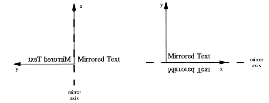

Definition from IAI: The text style with mirror allows the
addition of a mirroring, given by an IfcAxis2Placement, to the style
controlling the appearance of the annotated text.
NOTE: The IfcTextStyleWithMirror is an entity
that had been adopted from ISO 10303, Industrial automation systems and
integration—Product data representation and exchange, Part 46: Integrated
generic resources: Visual presentation.
Illustration from ISO 10303-46, page 125:

NOTE: Corresponding STEP name:
text_style_with_mirror. Please refer to ISO/IS 10303-46:1994, p. 124 for the final
definition of the formal standard.
HISTORY: New entity in Release
IFC2x 2nd Edition.